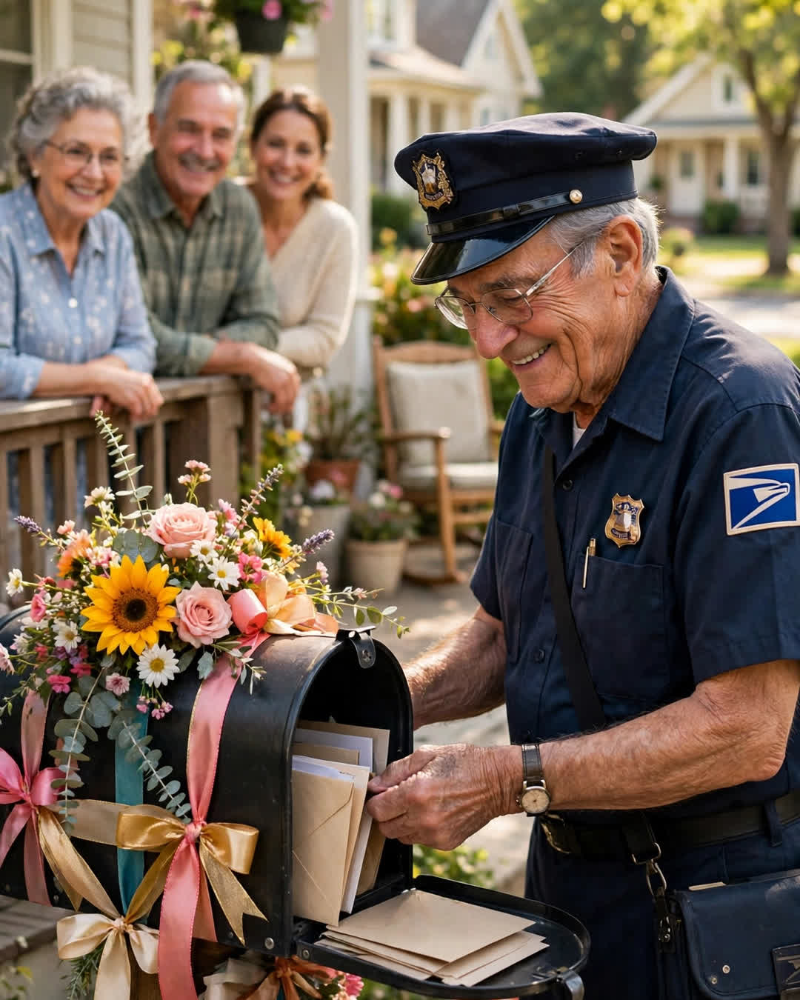

The Mailman's Last Day
A Clipp Kaili original story

On his last day after thirty-four years, Walter Reed could not finish his route, because every single mailbox on it was waiting for him.
Walter had walked the same eleven streets since 1991. He knew the dogs by name and the grandchildren by their bicycles. He knew which porch step was loose, which house took a package inside when it rained, which widow liked her letters handed to her at the door because, she said, "the box is too far when you are only talking to yourself all day." He double-checked the mail of the elderly on his route the way other men check locks — twice, every time, no exceptions.
He was not famous. He was just there, every day, in all weather, the most regular heartbeat a neighborhood has.
His retirement was his own choice. Sixty-six, knees talking back, a wife who had waited through thirty-four years of Saturdays. The post office gave him a cake in the break room and a plaque he pretended not to care about. He told Marlene, his wife, that the last route would take the usual four hours, and he would be home by two.
He was home at five-thirty.
Here is why. The night before, word having traveled the route the way news travels through people who see each other at mailboxes every day, nearly two hundred households had quietly gone to work. It started with the Hendersons taping a card to their box. Then the family with the triplets tied balloons. By dawn, every mailbox on Walter's route was decorated — flags up, ribbons, flowers in jars beside boxes, children's drawings of a mailman with a bag bigger than his body, and taped inside lid after lid, letter after letter after letter.
Some were funny. "Thanks for never delivering the bills to the wrong house. The neighbors kept getting ours and we liked it that way."
Some were not. A man Walter had waved to for twenty years wrote: "You were the only person who spoke to me the year after my wife died. You pretended it was about the mail. We both knew. Thank you."
A nine-year-old wrote in purple marker: "You always waited when I ran out with Grandma's letters. I am going to miss the waiting part most."
Walter told himself at the tenth mailbox that he would stop opening them and read the rest at home. He opened every one. He stood on sidewalks where he had stood ten thousand times and read his own life handed back to him in other people's handwriting. Twice, families came out and hugged him and would not let him hurry. Mrs. Alvarez — eighty-nine, the widow who liked her letters at the door — met him on her porch with coffee and the last letter of the route, hers, in an envelope she had sealed in 1998.
"I wrote this when you saved my late husband's medicine delivery in the ice storm," she said. "I figured I would give it to you on a day that mattered. Today matters."
He carried that route's mail in one bag and its gratitude in another, heavier one, all the way home.
Marlene was waiting on their porch. She saw the flowers, the ribbons pinned to his bag, the envelopes stuffed in every pocket of his uniform, and she understood before he said a word.
"You were beloved out there," she said.
"I was just the mailman," he said.
"No," she said, taking the heavy bag from his shoulder. "You were the proof, eleven streets wide, that showing up every day is a kind of love. They just finally got to deliver something back."
He still walks those streets most mornings. No uniform, no bag, just a man out for his health, the doctor says.
The waves take forever now. He would not have it any other way.
This story is a work of fiction, written to touch hearts and bring families closer.
← Back to all stories